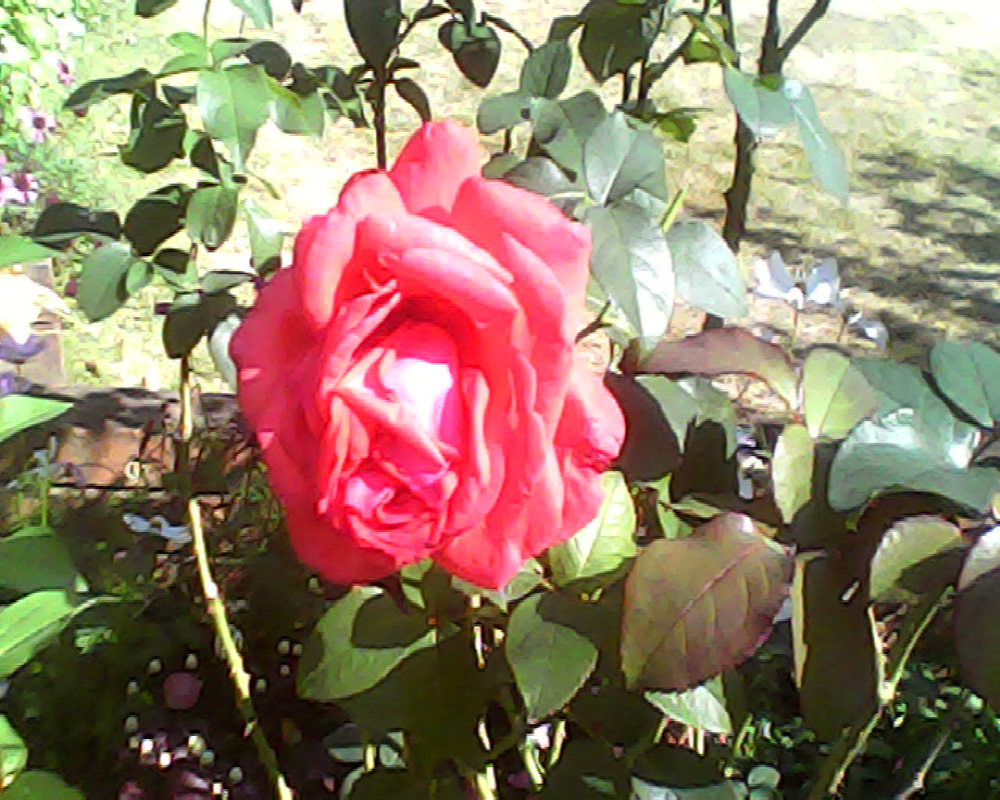

秋の薔薇が見ごろだということで、最寄りの薔薇園に行ってきた。天気予報では雨や曇りになっていたが、当日になると好天に恵まれてのんびり散策することができた。パン屋さんでお昼を買い、ぽかぽかの陽気の中で食べてから薔薇を観賞。ぱっと見盛大なのはやはり春なのだが、一輪一輪に注目するとどれも立派に咲き誇っていることが分かる。帰りのバスの運転手さんの声音が優しく心が温まった。

✦
2026.11.01
2026.11.01
秋の薔薇が見ごろだということで、最寄りの薔薇園に行ってきた。天気予報では雨や曇りになっていたが、当日になると好天に恵まれてのんびり散策することができた。パン屋さんでお昼を買い、ぽかぽかの陽気の中で食べてから薔薇を観賞。ぱっと見盛大なのはやはり春なのだが、一輪一輪に注目するとどれも立派に咲き誇っていることが分かる。帰りのバスの運転手さんの声音が優しく心が温まった。
